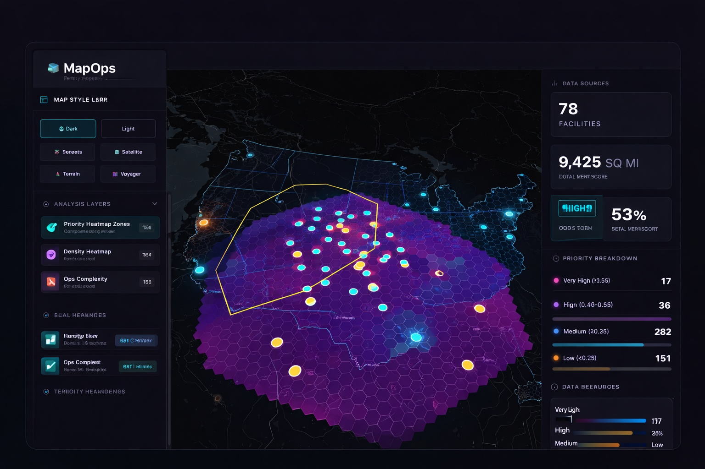

See the market clearly
MapOps layers territory logic, market signals, and sales context into one live view your team can actually use.
MapOps builds live GTM territory maps that help sales leaders, founders, and RevOps teams decide where to focus before they expand.
We turn messy market questions into clear geographic decisions. Where is the best next market? Which pockets deserve rep coverage? Where is whitespace hiding? What should get cut, doubled down on, or tested next?

MapOps layers territory logic, market signals, and sales context into one live view your team can actually use.
Reduce overlap, bad routing, weak market guesses, and broad territory thinking that burns time and budget.
Use one shared map to align leadership, sales, and GTM planning around what to do next and why.
This is a real MapOps dashboard. Your map will be similar in structure, but tailored to your market, motion, and sales questions.
Bring the market, territory, or coverage question you’re wrestling with. We’ll look at the motion, talk through the territory logic, and figure out whether a live map would help your team move faster.